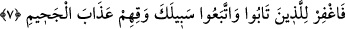

şu müşriklerin de “cehennemlik olduklarına dâir Rabbinin sözü,” azaba ilişkin hüküm
ve kazası “böylece gerçekleşti.”
Çünkü bunlar cezalandırmaların en şiddetlisine ve en reziline yâni cehennem azabına
müstahaktırlar. Hz. Peygamber (s.a.)’e karşı düşmanlıkta birleşen inatçı birer kâfir
olmaları hasebiyle bu azaptan ebediyen kurtulamayacaklardır. Tıpkı kendilerinden
önceki helak olmuş ümmetlerin başına geldiği gibi. Hasılı bunlar başka türlü
cezâlandırma ve azaplara çok daha müstahak, çok daha lâyıktırlar. Onları bu konuda
birleştiren, aynı durumları yâni cehennemlik olmalarıdır.
İşte aynı gerekliliğe benzer bir şekilde, şu helak edilmiş kavimler hakkında da
“cehennemlik olduklarına” ilişkin ilâhî hüküm kesinleşmiştir. Yâni bunların, köklerini
kazıyan bir azapla dünyada helak edilmesi gerektiği gibi ahirette de cehennem azabıyla
cezalandırılmaları gerekmektedir. Böylece her iki halleri de dikkate alınarak bir
benzetme yapılmış olması söz konusudur. İki taraf arasındaki ortak yön ise azabın
gerekmesidir.
Âyette bir şeyde ısrar etmenin hem dünyada hem de âhirette ilâhî cezâlandırma ve
azâbı gerekli kılacağına dâir bir işâret vardır. Bu durumda aklı başında olan birinin,
başkaları kendisinin başına gelenlerden ibret almadan önce, başkalarının başına
gelenlerden ibret alıp Allah’a tevbe ve rücû etmesi gerekmektedir.
[Sa’dî, Bustan’da şöyle der]:
Bahtı tersine dönmüş bir adam zencire düşünce
Akıllı kişiler ondan ibret alır.
Sen cezaya çarpılmadan önce af kapısını çal.
Dayak altında feryâd etmenin faydası yoktur.
Cenab-ı Hak cümlemizi gazabını celbedecek durumlardan uzak eylesin!
7. Arş’ı yüklenen ve bir de onun çevresinde bulunanlar (melekler), Rablerini
hamd ile tesbih ederler, O’na îman ederler. Müminlerin de bağışlanmasını isterler:
Ey Rabbimiz! Senin rahmet ve ilmin her şeyi kuşatmıştır. O halde tevbe eden ve
senin yoluna gidenleri bağışla, onları cehennem azabından koru! (derler).
“Arşı yüklenen…” “Arş,” bütün cisimleri kuşatan cisimdir. “Arş” diye
isimlendirilmesi, ya yüksek olması ya da karar verecekleri sırada üstüne kurulmaları